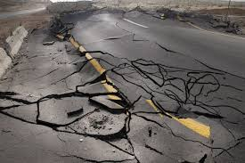

Things To Prepare
Earthquakes
How to Prepare BEFORE the Earthquake
Before:
- Fasten shelves securely to walls, and place heavy objects on lower shelves.
- Store breakable items in low, closed cabinets.
-
- Hang items such as pictures and mirrors away from beds and anywhere people sit.
- Brace hanging light fixtures.
- Strap your water heater to studs in the wall and bolt it to the floor.
- Store flammable liquids, on bottoms shelves of latched cabinets.
- Identify safe places in each room (under sturdy furniture, against inside walls, away from glass).
- Locate safe places outdoors (away from buildings, trees, electrical lines, and bridges).
- Have disaster supplies on hand (flashlight and extra batteries, battery operated radio, first aid kit with manual,
emergency food and drinking water, non electric can opener, cash, sturdy shoes).
- Develop an emergency communication plan in case family members are separated.

How to Prepare DURING the Earthquake
- Take cover beneath a sturdy piece of furniture or against a wall away from glass that might break.
- Stay inside. The most dangerous thing you can do during an earthquake is to leave.
